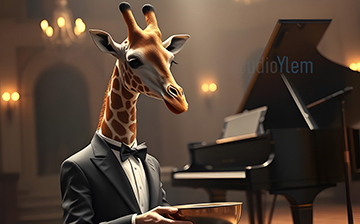
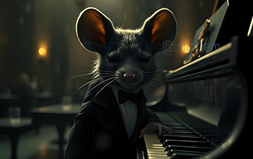

MUSIC FOCUS
We are a versatile music and audio production team with extensive
experience in composing and editing soundtracks for films, TV shows,
and documentaries. Our work spans original scores, ambient and field
recordings, and custom compositions tailored to a wide range of
visual and narrative media
THE STUDIO
Our setup supports high-quality small-scale recordings, ideal for
capturing the nuances and character of vocals (lead, backing),
spoken word, voiceovers, acoustic and electric guitars (from clean
takes to layered textures), air instruments (trumpets, saxophones,
flutes and other expressive elements)

SOUND PALETTE
Versatile sound palette for Visual Media. Our music production
embraces a broad and expressive range of sonic styles, carefully
crafted to serve storytelling in all its forms. We work across
different genres

AUDIO TARGETS
Whether it's music production, audio post for podcasts,
advertising, branded content, or any creative audio project, we
deliver high-quality, on-demand solutions with a keen ear for detail
and storytelling.

INSTRUMENTS IN THE PLAY
Organic instrumentation, including piano, strings, guitars, flutes,
hand percussion, and field textures for an intimate, human touch
pop-inspired hooks

VERSATILITY
Hybrid scores, blending acoustic and digital elements to create
unique, immersive soundtracks. Whether your project calls for
cinematic depth or even minimalist tension

PROJECT GROWING
We tailor our compositions to resonate with the visual message. Our
approach is adaptable, emotionally focused, and always connected to
the rhythm of the image, or your next pop hit

SERVICES
We offer in-house capabilities for small recording sessions and
provide end-to-end services including editing, mixing, and mastering

SKILL FACTORS
Motifs, catchy melodies, modern beats, and accessible sound design
to enhance brand identity or narrative clarity, warm acoustic
emotion, or bright, engaging pop energy

MUSIC VISUALS
Atmospheric Music, ideal for underscoring emotion, space, and
subtle emotional tension

ADVERTISING
There is space for any kind of sonic idea and need, including
jingles and dedicated tailored audio

AMBIENT / AMBIENTS
Electronic soundscapes from deep, textured synth layers to rhythmic
pulses, experimental tones and ambient captures


{kind=link}
{kind=link}
{kind=link}